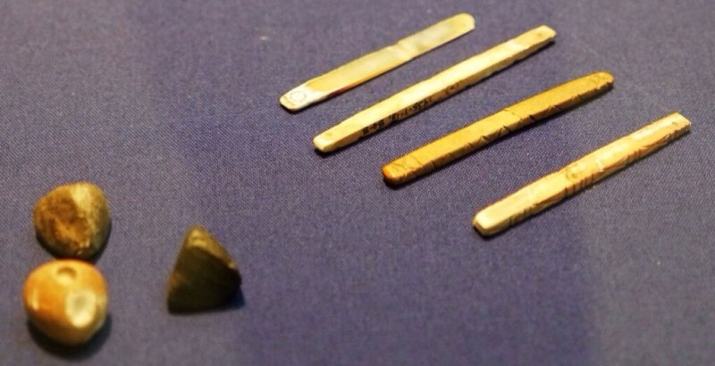
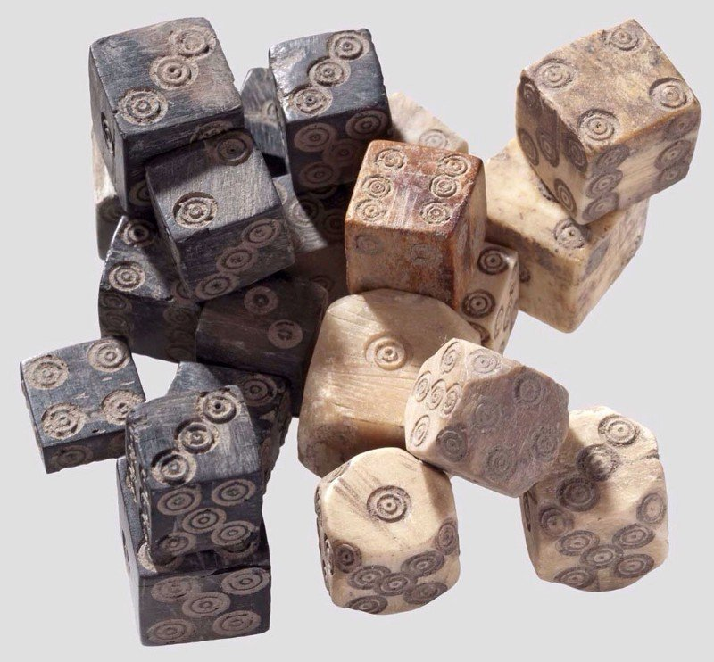
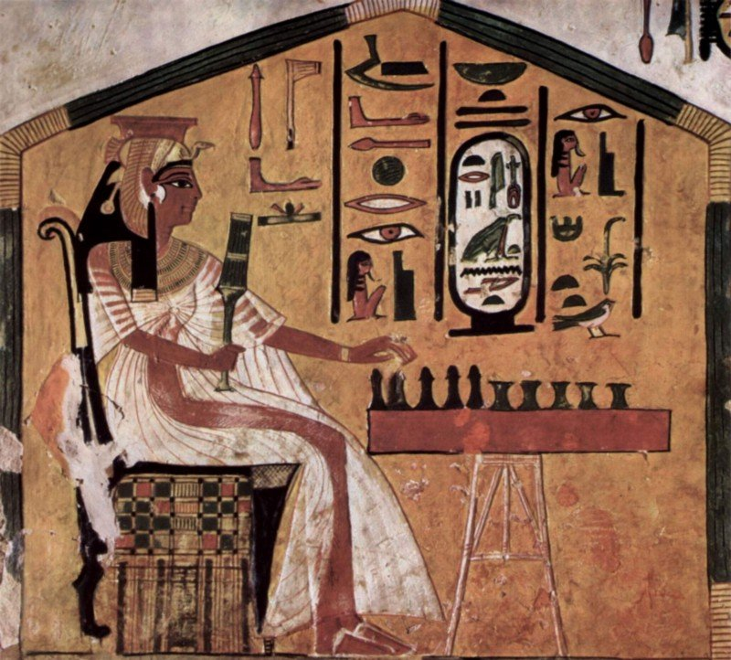
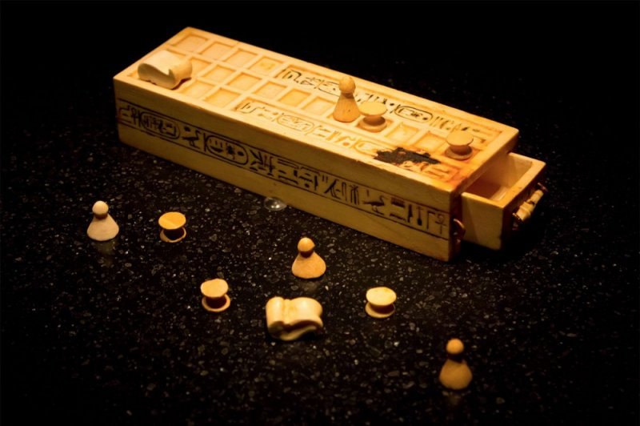
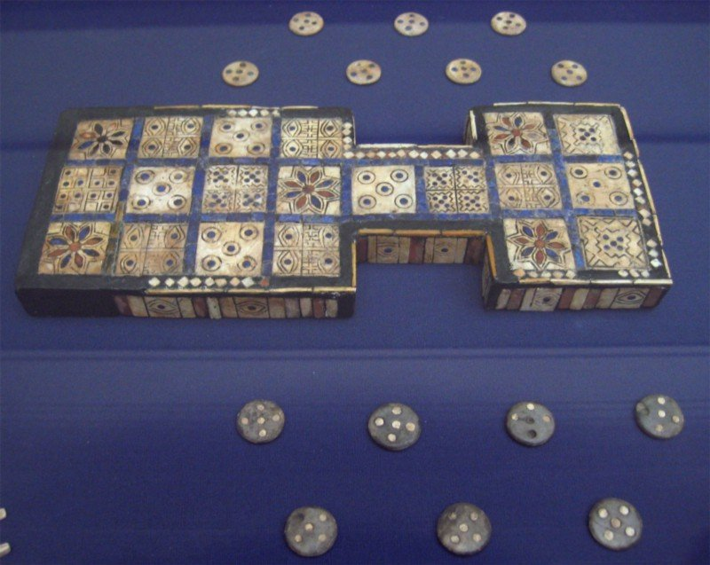
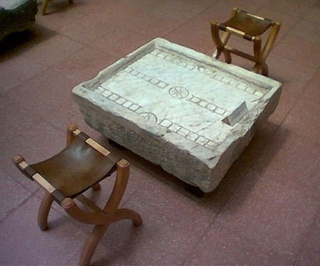
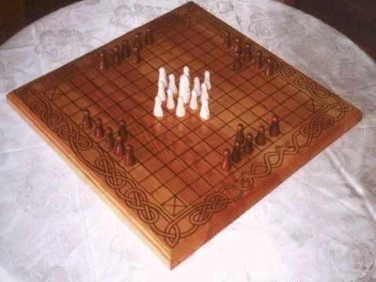
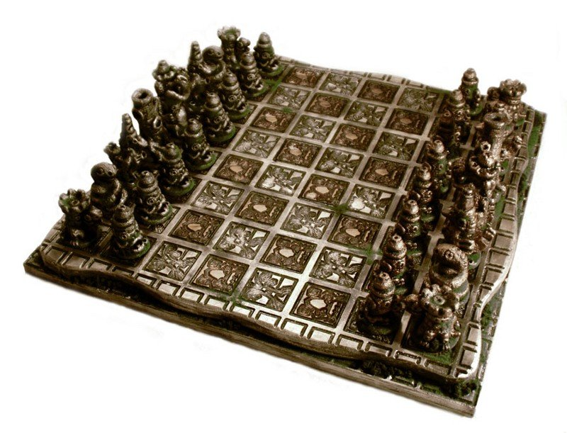
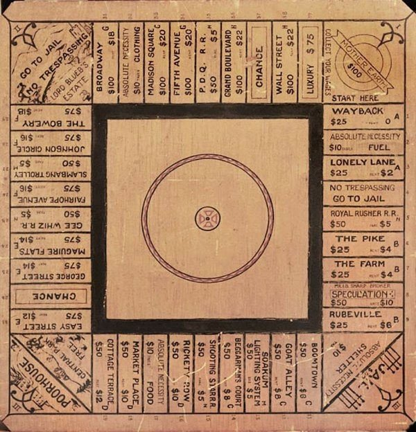

Игры без компьютера
История настольных игр
Первые настольные игры (5000 лет до н.э.)
Некоторые люди и не догадываются, что настольные игры появились в доисторические времена ещё до появления письменности. Так что же было первой настольной игрой?.. Кости! Неотъемлемая часть большинства современных настольных игр была основой древнейших игр человечества.
Набор из 49 вырезанных и покрашенных камешков был найден во время раскопок 5000-летнего кургана Башур Хаюк на юго-востоке Турции. Они являются самыми древними игровыми компонентами, найденными археологами. Схожие экземпляры были найдены в Сирии и Ираке и могут указывать на то, что настольные игры пошли из «Плодородного полумесяца».
Другие ранние примеры игровых кубиков представляют собой плоские палочки, одна сторона которых была покрашена. Эти палочки подбрасывались все вместе, и количество палочек, упавших покрашенной стороной вверх, определяло результат броска. Месопотамские кубики были сделаны из различных материалов, включая кости фаланг пальцев, дерево, покрашенные камни и черепаший панцирь.
Кубики со временем стали делать из широкого спектра материалов, таких, как медь, латунь, стекло, слоновая кость и мрамор. Кубики из Древнего Рима очень похожи на шестигранные кубики, которые мы бросаем по сей день. Были также кубики с обрезанными углами (можно увидеть на изображении выше), дающие дополнительные возможности при броске. Они очень похожи на многогранные кубики, используемые в Dungeons & Dragons и других ролевых играх.
Настольные игры становятся королевским развлечением (3100 лет до н.э.)
Настольные игры стали популярным развлечением среди фараонов в Древнем Египте. В первую очередь игра Сенет. Игра была найдена в захоронениях додинастической эры и эры Первой Династии. Сенет можно было увидеть на фресках древнеегипетских гробниц. Ко времени Нового Царства в Египте игра стала чем-то вроде талисмана для путешествия в мир мёртвых.
Древние египтяне имели сильную веру в концепцию судьбы. Считалось, что ярко выраженный фактор удачи в Сенете был тесно связан с этой концепцией. Существовало поверье, что успешные игроки получали защиту верховных богов Египетского пантеона: Ра, Тота и иногда Осириса. Поля для Сенета часто помещались в могилы вместе с другими полезными объектами, в помощь для опасного путешествия через загробный мир.
Но по поводу самого игрового процесса мнения разнятся. Поле для Сенета разделено на 30 квадратов, расположенных в три ряда по десять штук. Также имеется два набора пешек (около пяти на игрока, в некоторых других вариациях больше или меньше). Историки делали догадки о правилах игры, которые были заимствованы разными компаниями для выпусков современных наборов Сенета.
Cамая долговечная игра человечества (2650 лет до н.э.)
Принято думать, что человечество дольше всего играет в нарды, но на самом деле Королевская игра Ур гораздо старше.
Предполагалось, что эту игру заменили нарды ещё 2000 лет назад. Тем не менее, игровой энтузиаст Ирвинг Финкель обнаружил правила игры, вырезанные на старинной каменной скрижали, а потом увидел фотографию идентичной игры из современной Индии. После этого Финкель встретил бывшего школьного учителя, игравшего в ту же игру, будучи ребёнком. Это сделало Королевскую игру Ур игрой, в которую играли дольше, чем в какую-либо ещё в мировой истории.
Игра была найдена недалеко от Королевской Гробницы Ур в Ираке, отчего и берёт свое имя. Также был найден комплект игры в гробнице Тутанхамона. В Королевской игре Ур у каждого игрока был набор из семи фишек чёрного или белого цвета, а также по три четырёхгранных кубика.
Появление нард (2000 лет до н.э.)
В Римской Империи была популярна игра под названием Ludus duodecim scriptorum. Название примерно переводится как «игра двенадцати линий», скорее всего, ссылаясь к трём рядам из 12 засечек, найденным на уцелевших полях для игры. Предполагается, что игра Табула — наследница этой игры, и обе они очень похожи на современные нарды.
Старейшая игра с правилами, идентичными нардам, имела поле с теми же двадцатью четырьмя пунктами, по 12 на каждой стороне. Как и в современном варианте, у игроков было по 15 шашек и использовались шестигранные кубики. Условия победы заключались в том, чтобы перевести в дом и снять с доски все шашки игрока. Единственное различие в том, что использовались три кубика вместо двух, а шашки начинали движение за доской. На поле они переходили так же, как шашки переходят через бар в нынешнем варианте игры.
Игра хнефатафл и рождение шахмат (400 гг.)
Хнефатафл принадлежит к древнегерманским и кельтским стратегическим настольным играм, использующим шахматную доску и две армии неравных размеров.
Несмотря на то, что размеры доски и количество фигур различалось от версии к версии, во всех сохранялась явная пропорция 2:1 в количестве фигур разных сторон, у меньшей из которых была фигура короля в центре поля. Задача короля заключалась в том, чтобы сбежать за пределы доски, пока превосходящие силы пытались взять его в плен. Атакующая сторона имела преимущество в начале каждой игры. Предполагается, что такой тип расстановки сил был вдохновлён успехами рейдов викингов.
Хнефатафл распространялся везде, где путешествовали викинги, включая Исландию, Британию, Ирландию и Лапландию. В одной только Северной Европе встречаются несколько версий игры...
Хнефатафл получил ответвление, названное «чатуранга». Чатуранга — это древнеиндийская стратегическая игра, появившаяся в государстве Гуптов примерно в VI в. н.э. Затем, в VII в., она была перенята под названием шатрандж в Сасанидской Персии, а вследствие этого перешла в позднюю средневековую Европу уже как шахматы.
Игра чатурангу проводилась на доске 8 × 8 без шашечной разметки, называемой аштапада. Доска иногда обладала особыми пометками, предназначение которых неизвестно до сих пор.
Вскоре игра приобрела свой европейский вид — шахматы, использующие такую же доску 8 × 8 клеток. Ранние следы шахмат можно найти в Сасанидской Персии в шестисотых годах н.э. Строятся теории о том, что мусульманские купцы заходили в европейские порты и завозили с собой орнаментальные фигуры шахматных королей, которые носили с собой на счастье, прежде чем игра была завезена туда полностью.
Примерно в 1200-х годах правила шатранджа начали изменяться в южной Европе, и примерно в 1475 г. несколько радикальных изменений сделали игру такой, какой мы знаем её сегодня. Эти современные правила для базового движения были переняты Италией и Испанией. Пешки получили возможность двигаться на две клетки на первом ходу, а слоны и королевы получили свои ныне известные способности. Королева заменила старую фигуру визиря в конце десятого века и к пятнадцатому стала самой весомой единицей. Поэтому современные шахматы стали называть «шахматами королевы» или «шахматами безумной королевы». Эти новые правила быстро распространились по западной Европе. Правила, берущие во внимание патовые ситуации, были утверждены только в позднем XIX в. Таким образом, шахматы, в которые мы играем сегодня, были результатом изменения правил другой игры.
Первые свидетельства манкалы (700 гг н.э.)
Манкалой обычно называют конкретную игру, но, тем не менее, это целый жанр. Такие игры часто называют «играми в зёрна» или «играми посева и захвата», что описывает сам игровой процесс. Слово «манкала» происходит от арабского слова «накала», означающее «двигать». Известно более 800 вариантов манкалы и почти 200 изобретённых игр были описаны. Но некоторые из этих названий могут означать одну и ту же игру, в то время как одна игра может иметь несколько названий.
Большая часть игр такого типа имеет схожий игровой процесс. Игроки начинают, помещая определённое количество семян, варьирующиеся в разных играх, в каждую лунку на поле. Игроки могут посчитать свои камни, чтобы спланировать игру. Ход начинается с изъятия всех семян из лунки, «посева» семян (помещения по одному в каждую соседнюю лунку) и захвата, основанного на состоянии поля.
Поля для манкалы, делающиеся из самых разных материалов, имели ряд лунок, расположенных по рядам, обычно в два по четыре. Материалом могла быть глина и другие податливые субстанции. Иногда играли, роя ямки в земле или вырезая их в камне. Ямки могли называться «углублениями», «лунками» или «домиками». Иногда на полях были большие углубления, называемые «амбарами», нужные для расположения игровых элементов.
В качестве игровых фишек использовались семена, бобы, камни, раковины каури, половинки шариков и другие маленькие однообразные метки, которые клались и перемещались между лунками во время игры.
Цель большинства игр с двумя или тремя рядами лунок в том, чтобы захватить больше камней, чем твой оппонент. В играх с четырьмя рядами часто нужно оставить противника без возможности сделать разрешённое правилами движение, а иногда и захватить все фишки в своём переднем ряду.
В начале хода игрок выбирает ямку с семенами, которые будут посеяны по полю. Выбор часто ограничен углублениями, ближайшими к действующему игроку, и лунками с наименьшим количеством семян.
На стадии, известной как посев, все семена из лунки опускаются одни за другими в последующие лунки, распространяя их по полю. Это действие называется посевом не только потому, что игры в манкалу часто игрались с настоящими семенами. Помещение семян по одному в разные лунки отражает настоящий посев. Игра может иметь лишь один круг посева.
Ранние свидетельства игры представляют собой фрагменты гончарных полей и каменные вырезки, найденные в районе Аксума в Эритреи, а также в Иехе (в Эфиопии). По словам археологов, они принадлежат к VI и VII векам. Игру так же упоминал Георгий Абба в своём тексте XIV в. «Тайны рая и земли», написанном на языке геэз. Георгий ссылается на игру, называемую «каркис» — термин, использующийся на геэз для определения манкалы.
Схожесть некоторых аспектов с сельскохозяйственной активностью и отсутствие нужды в специализированных деталях наводят на мысль о том, что игра могла быть старше самой цивилизации; к сожалению, было найдено слишком мало экземпляров игры старше 1300 лет.
«Игра землевладельца» (1903 год)
Что? Вы никогда не слышали об «Игре землевладельца» (The Landlord's Game)? Она была создана Лиззи Меги, одной из первых американских создательниц настольных игр. Игровое поле состоит из размеченной на квадраты дорожки с рядом недвижимости, приобретаемой игроками. Поле имело две железные дороги, две энергетические компании, тюрьму и угол с надписью «Работа на землю-кормилицу обеспечивает зарплату», который давал игрокам $100 каждый раз, когда они пересекали его.

Меги изобрела и запатентовала «Игру землевладельца» в 1904 г., с целью практической демонстрации отъёма земли со всеми вытекающими из него последствиями. Она основала игру на экономических принципах джорджизма, разработанных Генри Джорджем, с целью показать, как налоги обогащают владельцев имущества и опустошают карманы арендаторов.
Она знала, что некоторым людям труднее понять, почему это случается и что можно сделать по этому поводу, и что джорджистские идеи, реализованные в форме игры, могут быть гораздо нагляднее. Мэги также надеялась, что пока в «Игру землевладельца» будут играть дети, она может вызвать у них естественные подозрения в несправедливости, заставляя их быть бдительнее во взрослой жизни.
В 1935-м Мэги продала свой патент на «Игру землевладельца» братьям Паркерам, сделавшим из неё современную «Монополию». Эта игра, приведшая братьев Паркеров к огромному успеху, поначалу ими же и отвергалась.